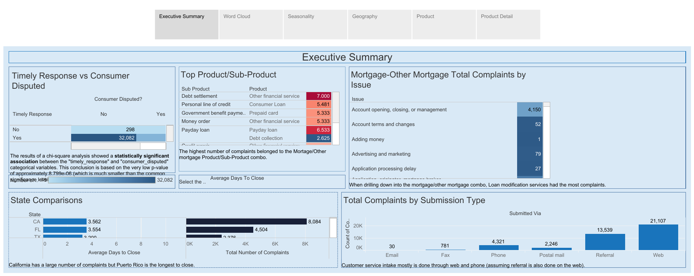
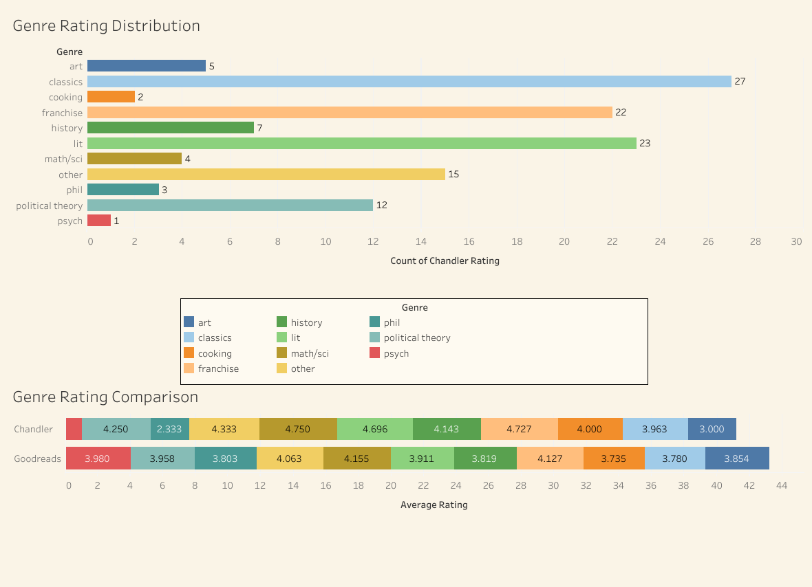
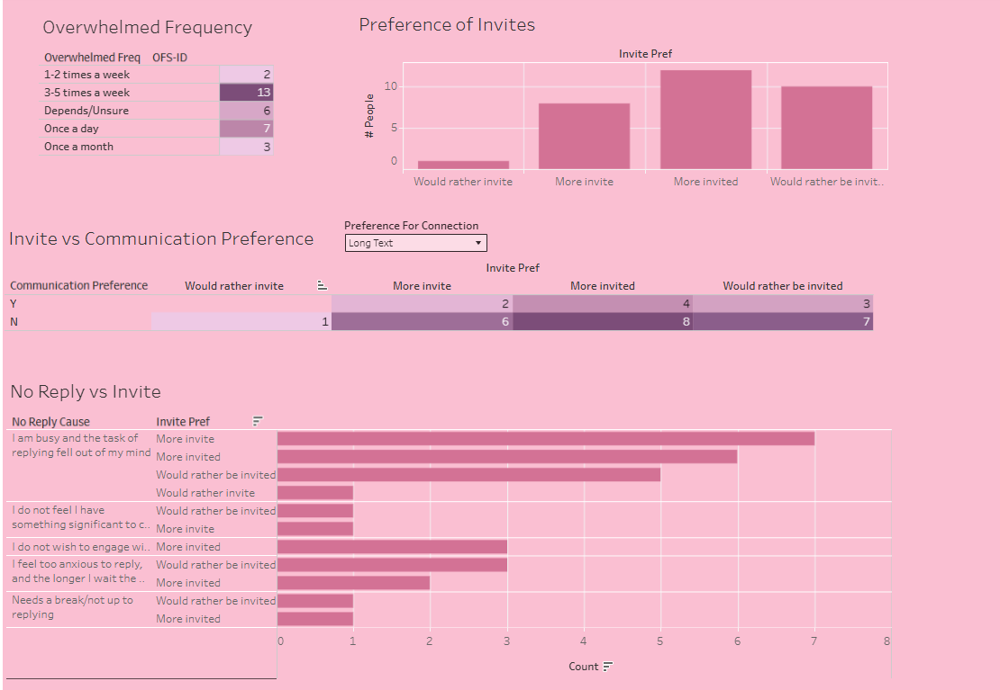
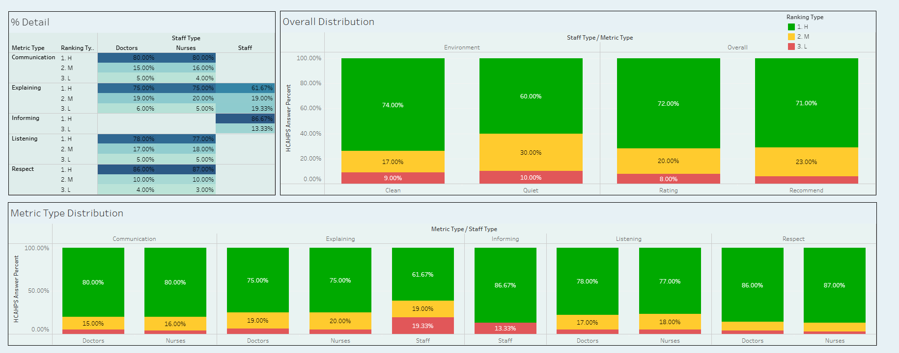

No single algorithm solves every scramble. You need to know which one to reach for at each stage, and in what order. Below is Stephanie's algorithm library. The projects further down are that library put into practice.
certified
Currently training for the Microsoft Excel World Championship, just for fun!
Below, you’ll find some examples of Stephanie's favorite projects:
For a federal public health agency, Stephanie built a Power BI suite implementing the TBM (Technology Business Management) Taxonomy, the industry-standard framework for mapping technology spend. It classifies IT costs across cost pools, resource towers, and solutions, then drills from an executive budget summary down to individual line items, turning raw financial exports into a navigable view of where money is committed and how it tracks against budget.

Using mock data, this project provides an example of how Stephanie could help a bank learn from the feedback of its customers. An opening executive summary lays out data on why customers are complaining, where they’re filing those complaints, and how fast the average response time is. The data aims to be usable and accessible for bank executives looking to improve the customer experience.

In this present to her husband, Stephanie mines his Goodreads data for patterns and trends. The project contains analyses like comparing his personal ratings to community averages, sorting the books he reads by time period, comparing his fiction vs. nonfiction consumption, and examining the genre distribution of his reading habits.

In a survey of her own friend group, Stephanie analyzes data about how people prefer to be contacted, why they don’t text back, and what makes them likely to commit to plans. It’s a study of social communication and the “whys” of human interaction.

For a research initiative at Empathetics, Stephanie built this dashboard from public CAHPS and HCAHPS survey data. It tracks how patients rate hospital staff on communication, explaining, informing, listening, and respect, each broken down by staff type so an administrator can compare doctors against nurses. A summary view rolls up cleanliness, quietness, and recommendation rate.